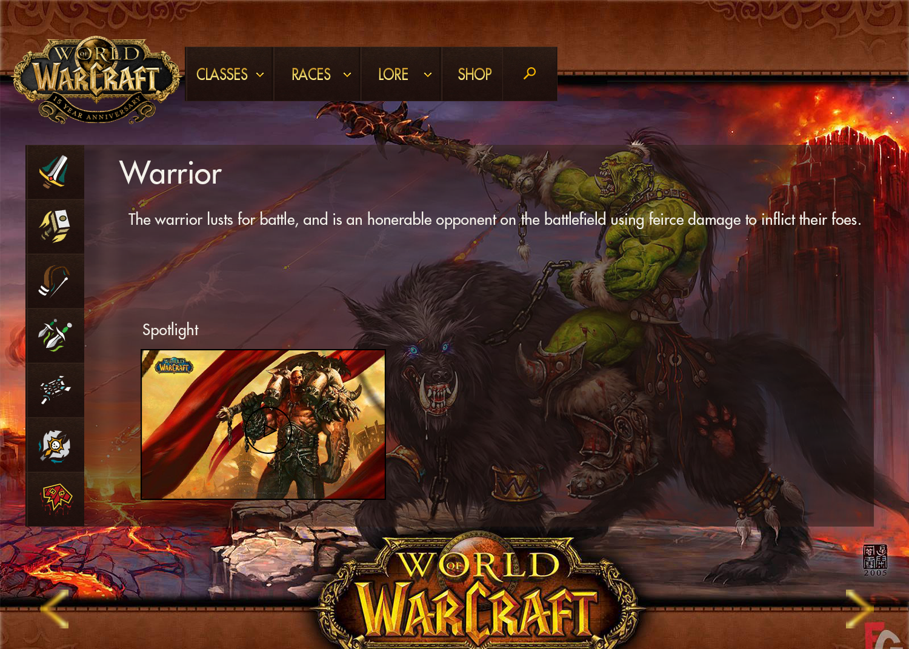

Ui design
My proposed UI design, is intended for people who are interested in the MMO game World of Warcraft. It is aimed to basically demonstrate what World of Warcraft is to new users, and also give a glimpse of what the game entails, such as lore, classes, and other things you can receive out of the game and its benefits, including but not limited to the external events that you can attend, and the merchandise that you can purchase. This website is dedicated to beginners and intermediate players as well as the adventurous and the curious, and the daring, and willing to give something new a go.
research Styles

Wireframes
Class Wireframe
This is a small demonstration of how the website will look like. Colours may of course vary, and are solely used for the purpose of illustrating the dimensions and proportions of each individual division within the page layout, and to give a base understanding of the positioning for each element on this page.

The proposed idea for the classes page is that each class will have an icon associated with its class, and clicking on one of the icons will highlight the icon button, and the page will change depending on what class icon was selected. This procedure will be used as the same concept in both the races, and lore tabs also.
Store wireframe

MOCKUP
Home Page
On the home page, you are greeted with this mockup image, and you are able to switch the images using the left and right arrows on the page as follows:

Dropdown menu

Classes menu
With the classes menu, you are able to switch between the classes on the leftside pane.
Shop menu

Featured items showcasing the Alliance mug and the Horde mug! with maybe a future possibility of ‘choose your side!’ or ‘support your side!’ as a slogan!